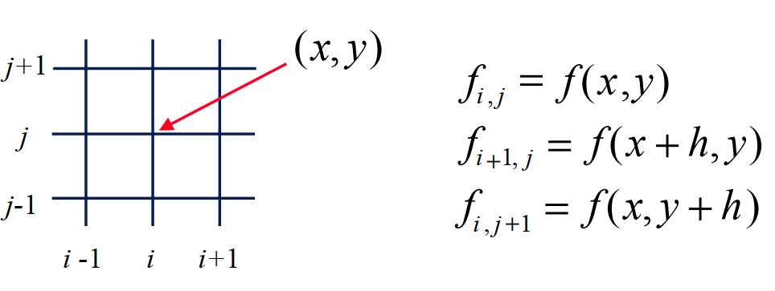

Discretizing the Domain
Uniform mesh (h=constant)
mesh
When using FINITE DIFFERENCE approximations,
the values of \(f\) are stored at discrete points and the
derivatives of the function are approximated using a
Taylor series:
Start by expressing the value of \(f(x+h)\) and \(f(x-h)\)
in terms of \(f(x)\)
Finite Difference Approximations
\[\begin{split}\begin{array}{l}
\cfrac{\partial f(x)}{\partial x}=\cfrac{f(x+h)-f(x-h)}{2h}+\cfrac{\partial^{3} f(x)}{\partial x^{3}}\cfrac{h^{2}}{6}+\cdots \\
\cfrac{\partial ^{2}f(x)}{\partial x^{2}}=\cfrac{f(x+h)-2f(x)+f(x-h)}{h^{2}}+\cfrac{\partial^{4} f(x)}{\partial x^{4}}\cfrac{h^{2}}{12}+\cdots \\
\cfrac{\partial f(t)}{\partial t}=\cfrac{f(t+\Delta t)-f(\Delta t)}{\Delta t}+\cfrac{\partial^{2} f(t)}{\partial t^{2}}\cfrac{\Delta t}{2}+\cdots \\
\end{array}\end{split}\]
For a two-dimensional flow discretize the variables on
a two-dimensional grid

Laplacian
\[\begin{split}\begin{align}
\cfrac{\partial ^{2}{f}}{\partial {x}^{2}}+\cfrac{\partial ^{2}{f}}{\partial {y}^{2}} & = \cfrac{f_{i+1,j}^{n}-2f_{i,j}^{n}+f_{i-1,j}^{n}}{h^{2}}
+\cfrac{f_{i,j+1}^{n}-2f_{i,j}^{n}+f_{i,j-1}^{n}}{h^{2}} \\ & = \cfrac{f_{i+1,j}^{n}+f_{i-1,j}^{n}+f_{i,j+1}^{n}+f_{i,j-1}^{n}-4f_{i,j}^{n}}{h^{2}}
\end{align}\end{split}\]
\[\begin{split}\cfrac{\partial {\omega}}{\partial {t}} +\cfrac{\partial \psi}{\partial y}\cfrac{\partial {\omega}}{\partial {x}}-\cfrac{\partial \psi}{\partial x}\cfrac{\partial {\omega}}{\partial {y}} = \cfrac{1}{Re}\bigg(\cfrac{\partial ^{2}{\omega}}{\partial {x}^{2}}+\cfrac{\partial ^{2}{\omega}}{\partial {y}^{2}}\bigg)\\\end{split}\]
\[\begin{split}\cfrac{\partial {\omega}}{\partial {t}} =-\cfrac{\partial \psi}{\partial y}\cfrac{\partial {\omega}}{\partial {x}}+\cfrac{\partial \psi}{\partial x}\cfrac{\partial {\omega}}{\partial {y}} + \cfrac{1}{Re}\bigg(\cfrac{\partial ^{2}{\omega}}{\partial {x}^{2}}+\cfrac{\partial ^{2}{\omega}}{\partial {y}^{2}}\bigg)\\\end{split}\]
Using these approximations, the vorticity equation becomes:
\[\begin{split}\begin{align}
\cfrac{{\omega}_{i,j}^{n+1}-{\omega}_{i,j}^{n}}{\Delta{t}} & =
-\bigg(\cfrac{\psi_{i,j+1}^{n}-\psi_{i,j-1}^{n}}{2h}\bigg)\bigg(\cfrac{\omega_{i+1,j}^{n}-\omega_{i-1,j}^{n}}{2h}\bigg)
+\bigg(\cfrac{\psi_{i+1,j}^{n}-\psi_{i-1,j}^{n}}{2h}\bigg)\bigg(\cfrac{\omega_{i,j+1}^{n}-\omega_{i,j-1}^{n}}{2h}\bigg)\\
&+\cfrac{1}{Re}\bigg(\cfrac{\omega_{i+1,j}^{n}+\omega_{i-1,j}^{n}+\omega_{i,j+1}^{n}+\omega_{i,j-1}^{n}-4\omega_{i,j}^{n}}{h^{2}} \bigg)
\end{align}\end{split}\]
The vorticity at the new time is given by:
\[\begin{split}\begin{array}{l}
{\omega}_{i,j}^{n+1}={\omega}_{i,j}^{n}+ {\Delta{t}} \bigg[
-\bigg(\cfrac{\psi_{i,j+1}^{n}-\psi_{i,j-1}^{n}}{2h}\bigg)\bigg(\cfrac{\omega_{i+1,j}^{n}-\omega_{i-1,j}^{n}}{2h}\bigg)\\
+\bigg(\cfrac{\psi_{i+1,j}^{n}-\psi_{i-1,j}^{n}}{2h}\bigg)\bigg(\cfrac{\omega_{i,j+1}^{n}-\omega_{i,j-1}^{n}}{2h}\bigg)\\
+\cfrac{1}{Re}\bigg(\cfrac{\omega_{i+1,j}^{n}+\omega_{i-1,j}^{n}+\omega_{i,j+1}^{n}+\omega_{i,j-1}^{n}-4\omega_{i,j}^{n}}{h^{2}} \bigg)\bigg]
\end{array}\end{split}\]
The stream function equation is:
\[\cfrac{\partial ^{2}\psi}{\partial x^{2}} +
\cfrac{\partial ^{2}\psi}{\partial y^{2}} =-\omega\]
\[\cfrac{\psi_{i+1,j}^{n}+\psi_{i-1,j}^{n}+\psi_{i,j+1}^{n}+\psi_{i,j-1}^{n}-4\psi_{i,j}^{n} }{h^{2}}=-\omega_{i,j}^{n}\]
Discretized Domain
Discretized Domain
Discrete Boundary Condition
Discrete Boundary Condition
\[\psi_{i,j=2}=\psi_{i,j=1}+\cfrac{\partial\psi_{i,j=1}}{\partial y} h+\cfrac{\partial ^{2}\psi_{i,j=1}}{\partial y^{2}}\cfrac{h^{2}}{2} +O(h^{3})\]
Using:
\[\omega_{wall}=-\cfrac{\partial ^{2}\psi_{i,j=1}}{\partial y^{2}} ;\quad U_{wall}=\cfrac{\partial\psi_{i,j=1}}{\partial y}\]
This becomes:
\[\psi_{i,j=2}=\psi_{i,j=1}+U_{wall}h-\omega_{wall}\cfrac{h^{2}}{2} +O(h^{3})\]
Solving for the wall vorticity:
\[\omega_{wall}=(\psi_{i,j=1}-\psi_{i,j=2})\cfrac{2}{h^{2}}+U_{wall}\cfrac{2}{h} +O(h)\]
At the bottom wall (j=1)
\[\omega_{wall}=(\psi_{i,j=1}-\psi_{i,j=2})\cfrac{2}{h^{2}}+U_{wall}\cfrac{2}{h} +O(h)\]
Similarly, at the bottom wall (j=ny):
\[\omega_{wall}=(\psi_{i,j=ny}-\psi_{i,j=ny-1})\cfrac{2}{h^{2}}-U_{wall}\cfrac{2}{h} +O(h)\]
\[\psi_{i,j=ny-1}=\psi_{i,j=ny}+\cfrac{\partial\psi_{i,j=ny}}{\partial y} (-h)+\cfrac{\partial ^{2}\psi_{i,j=ny}}{\partial y^{2}}\cfrac{h^{2}}{2} +O(h^{3})\]
Using:
\[\omega_{wall}=-\cfrac{\partial ^{2}\psi_{i,j=ny}}{\partial y^{2}} ;\quad U_{wall}=\cfrac{\partial\psi_{i,j=ny}}{\partial y}\]
This becomes:
\[\psi_{i,j=ny-1}=\psi_{i,j=ny}+U_{wall}(-h)-\omega_{wall}\cfrac{h^{2}}{2} +O(h^{3})\]
Solving for the wall vorticity:
\[\omega_{wall}=(\psi_{i,j=ny}-\psi_{i,j=ny-1})\cfrac{2}{h^{2}} -U_{wall}\cfrac{2}{h} +O(h)\]
At the left wall (i=1):
\[\psi_{i=2,j}=\psi_{i=1,j}+\cfrac{\partial\psi_{i=1,j}}{\partial x} h+\cfrac{\partial ^{2}\psi_{i=1,j}}{\partial x^{2}}\cfrac{h^{2}}{2} +O(h^{3})\]
Using:
\[\omega_{wall}=-\cfrac{\partial ^{2}\psi_{i=1,j}}{\partial x^{2}} ;\quad 0=\cfrac{\partial\psi_{i=1,j}}{\partial x}\]
This becomes:
\[\psi_{i=2,j}=\psi_{i=1,j}+0h-\omega_{wall}\cfrac{h^{2}}{2} +O(h^{3})\]
Solving for the wall vorticity:
\[\omega_{wall}=(\psi_{i=1,j}-\psi_{i=2,j})\cfrac{2}{h^{2}} +0 \cfrac{2}{h} +O(h)\]
At the right wall (i=nx):
\[\psi_{i=nx-1,j}=\psi_{i=nx,j}+\cfrac{\partial\psi_{i=nx,j}}{\partial x} (-h)+\cfrac{\partial ^{2}\psi_{i=nx,j}}{\partial x^{2}}\cfrac{h^{2}}{2} +O(h^{3})\]
Using:
\[\omega_{wall}=-\cfrac{\partial ^{2}\psi_{i=nx,j}}{\partial x^{2}} ;\quad 0=\cfrac{\partial\psi_{i=nx,j}}{\partial x}\]
Solving for the wall vorticity:
\[\omega_{wall}=(\psi_{i=nx,j}-\psi_{i=nx-1,j})\cfrac{2}{h^{2}} -0\cfrac{2}{h} +O(h)\]
Solving the elliptic equation:
\[\cfrac{\psi_{i+1,j}^{n}+\psi_{i-1,j}^{n}+\psi_{i,j+1}^{n}+\psi_{i,j-1}^{n}-4\psi_{i,j}^{n} }{h^{2}}=-\omega_{i,j}^{n}\]
Rewrite as
\[\psi_{i,j}^{n}=\cfrac{1}{4} \bigg(\psi_{i+1,j}^{n}+\psi_{i-1,j}^{n}+\psi_{i,j+1}^{n}+\psi_{i,j-1}^{n}+\omega_{i,j}^{n}{h^{2}} \bigg)\]
If the grid points are done in order, half of the points have
already been updated
Successive Over Relaxation (SOR)
\[\psi_{i,j}^{n+1}=\beta\cfrac{1}{4} \bigg(\psi_{i+1,j}^{n}+\psi_{i-1,j}^{n}+\psi_{i,j+1}^{n}+\psi_{i,j-1}^{n}+\omega_{i,j}^{n}{h^{2}} \bigg)+(1-\beta)\psi_{i,j}^{n}\]
Limitations on the time step
\[\cfrac{v\Delta t}{h^{2}}\le\cfrac{1}{4} \quad\quad \cfrac{(|u|+|v|)\Delta t}{v} \le2\]
{kind=link}
{kind=link}
{kind=link}
{kind=link}

{kind=link}
{kind=link}
{kind=link}